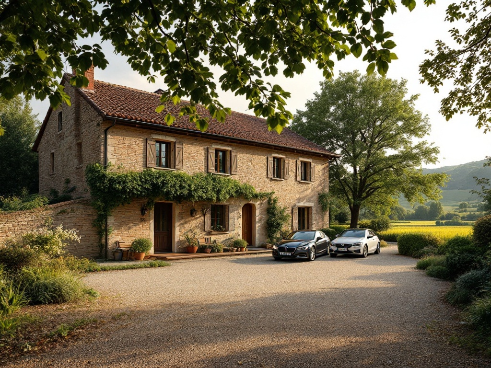
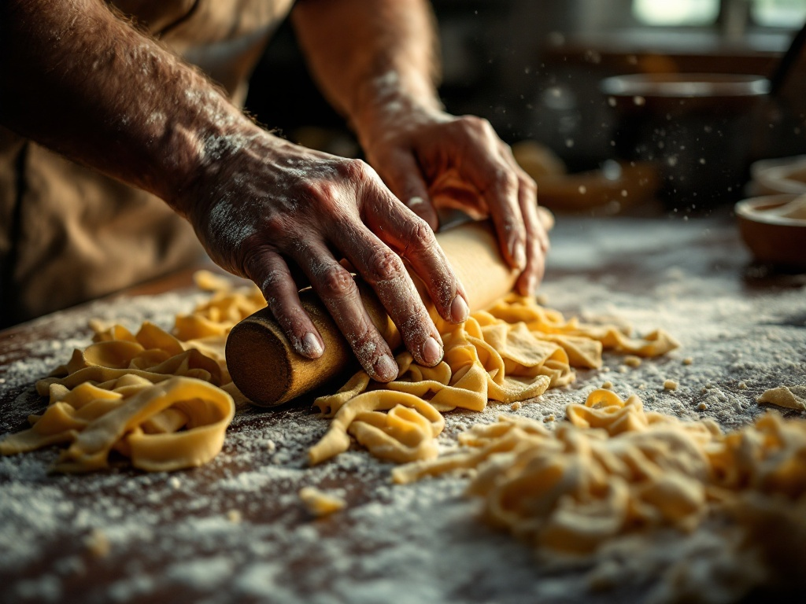
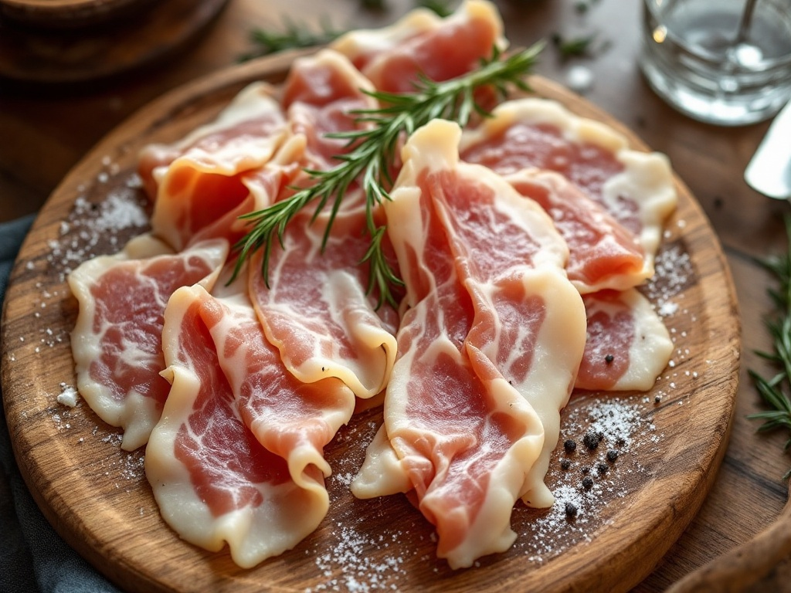
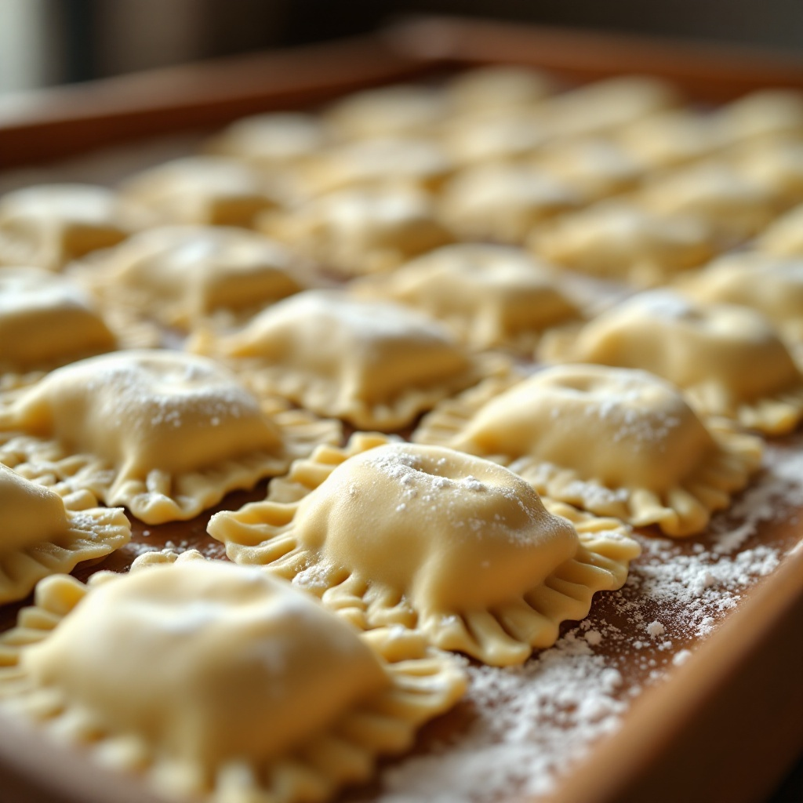
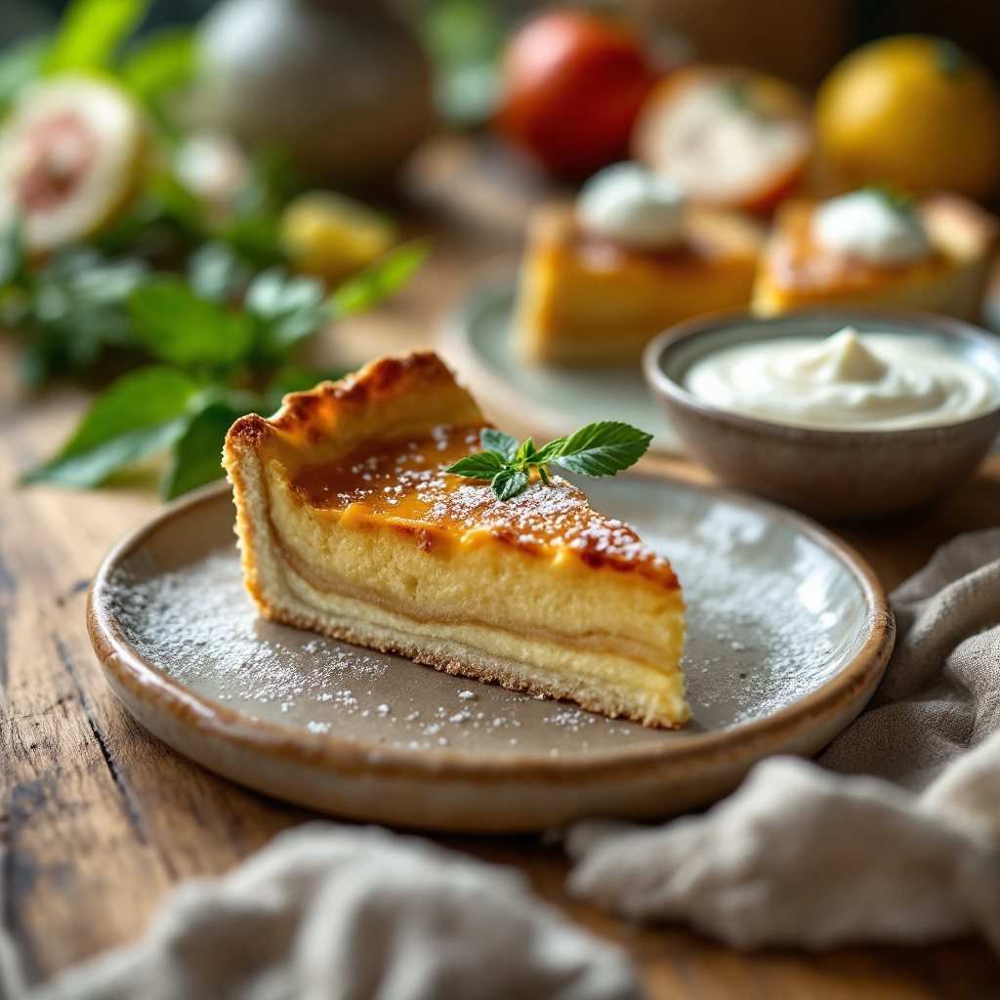
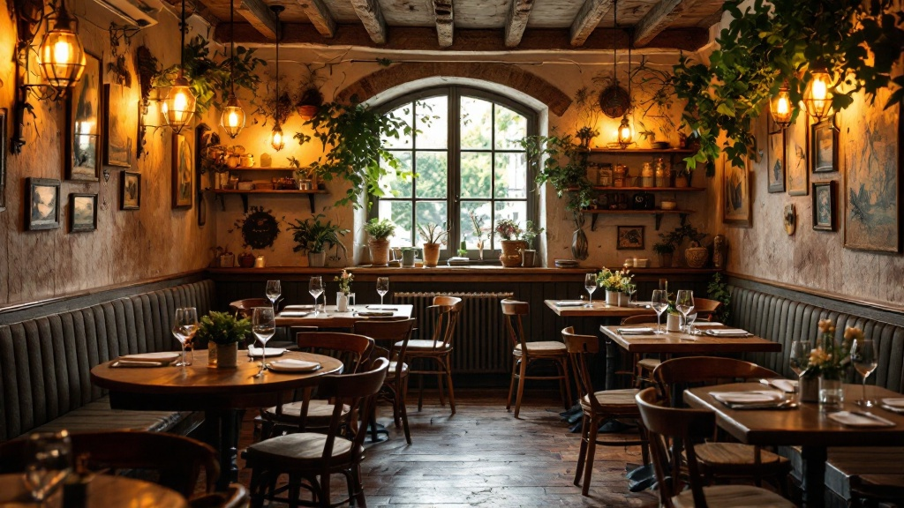

La Raviolata
Serata a tema
Ravioli fatti in casa, in più versioni. La nostra pasta ripiena servita come si deve.
€39 a persona
Toscana tra le risaie
Una trattoria toscana di famiglia, dentro le risaie del Parco Agricolo Sud. La campagna a dieci minuti da Milano.
Siamo nel Parco Agricolo Sud, tra le risaie e i campi coltivati. La cascina è sull'orizzonte, l'acqua corre nei solchi. Non è una scenografia: è una terra che lavora ancora.
Ci trovi in Barona, all'estremo sud della città. Dieci minuti dal centro e sei fuori: strada di campagna, filari di riso, la Cascina Battivacco a fianco.
Cuciniamo con quello che la terra intorno ci dà. Km zero non è una parola da menu: sono le verdure di stagione, il riso delle risaie, i fornitori che conosciamo di persona.
Chi arriva la prima volta resta sorpreso. Poi torna, perché mangiare in campagna senza uscire da Milano è raro.

La pasta è tirata a mano. Il lardo e la pancetta li stagioniamo in proprio. I dolci escono dalla nostra cucina, non da un fornitore. È il lavoro che distingue una trattoria da un ristorante qualsiasi.

Impastata e tirata ogni giorno. Ravioli, tagliatelle e i primi della tradizione toscana.
Curati in proprio, con sale, pepe ed erbe. Tempo e pazienza, niente scorciatoie.
Crostate, creme e dolci al cucchiaio. Imperfetti come devono essere quando sono veri.


Il menu cambia con la stagione e con quello che troviamo. Qui sotto le famiglie fisse: da queste scegli, poi ci pensiamo noi a raccontarti il resto in sala.

Alcune serate hanno una formula e un prezzo suo. Si prenota per tempo: i posti sono quelli di una trattoria, non di una sala grande.
Serata a tema
Ravioli fatti in casa, in più versioni. La nostra pasta ripiena servita come si deve.
Serata a tema
Il carrello dei bolliti a volontà, con salse e contorni della tradizione.
Cena con quiz musicale
Si cena e si gioca: quiz musicale a tavola, tra una portata e l'altra.
Ultimo venerdì del mese
La serata dell'enoteca. Vini in degustazione abbinati alla cucina della casa.
L'enoteca è interna. Le bottiglie le scegliamo noi, una a una, per stare bene con la cucina di casa.
L'ultimo venerdì del mese apriamo alle degustazioni. Ci si siede, si assaggia, si beve con calma. È il motivo per cui molti tornano.
#bevinerando · ultimo venerdì del meseLa cucina è nostra, di famiglia. Angelo porta la tradizione toscana con cui è cresciuto. Omar la manda avanti, giorno dopo giorno.
Lavoriamo fianco a fianco. Chi cucina è chi ti accoglie: non c'è un dietro le quinte lontano dalla sala.
È una trattoria di persone, non di un marchio. E si sente in quello che arriva in tavola.
— Angelo & Omar Zucchelli
Una media di 4,0 su 5, costruita su 589 recensioni. Non un picco isolato: un giudizio costante, di gente che è tornata e ha scritto.
Chi ci trova per la prima volta parla quasi sempre della stessa cosa — la campagna a due passi da casa, la cucina fatta in casa, l'accoglienza di una famiglia. È il racconto che ci fa più piacere leggere.
Quello che conta quando devi decidere dove andare, soprattutto se sei in tanti o hai un'occasione da festeggiare.
Locale LGBTQ+ friendly. A casa nostra si sta bene senza distinzioni.
Pasta fresca senza glutine e cura per intolleranze. Basta dircelo prima.
Sei in campagna: arrivi in auto e la lasci qui, nel nostro spazio.
Per le serate e le occasioni si può organizzare musica dal vivo.
Menu per banchetti e feste di famiglia. Anche asporto quando serve.

Si prenota al telefono: rispondiamo noi e ti troviamo il posto giusto. Chiama per un tavolo, una serata o una festa di famiglia.
Chiama e ti fissiamo posto, serata o festa.
+39 320 876 7989 Chiama per prenotare Vedi le serate